Introduction to Neural Networks#
A neural network is a type of machine learning model that learns to make predictions through a series of steps:
Receive input data: The model takes in the raw data.
Make a prediction: It uses the data to make an initial prediction.
Compare the prediction to the actual output: The model checks how close its prediction was to the correct result.
Adjust its internal parameters: Based on the comparison, the model updates its internal settings to improve future predictions.
Building Blocks of Neural Networks#
Neural networks are made up of several key components, including vectors, layers, and concepts from linear regression. Here’s how these work:
Vectors: Data is represented as vectors, which are simply lists of numbers. In Python, these vectors are usually stored in arrays.
Layers: A neural network consists of layers, where each layer processes the data it receives from the previous layer. You can think of each layer as a step that extracts more meaningful features from the data.
Transformation of Data: Each layer transforms the input in some way, gradually refining it to make better predictions. This process is similar to feature engineering, where each layer extracts a better representation of the data than the previous one.
General Applicability of Neural Networks#
One powerful feature of neural networks is that the same basic computations can be used on different types of data, whether it’s images, text, or something else. The process of extracting useful information and training the model is fundamentally the same across different data types.
In the diagram below, you’ll see a simple example of a neural network with two layers, illustrating how data moves through the layers to make predictions.
Deep Learning#
Deep learning allows neural networks to automatically learn which features are important from raw data, eliminating the need for manual feature engineering. In traditional machine learning, feature engineering involves selecting or crafting specific attributes to improve predictions, but deep learning automates this process by discovering patterns through multiple layers of the network.
This is particularly useful with complex datasets. For example, predicting a person’s mood from a photo would require defining facial features manually, but a deep learning model can learn these features on its own. Each layer of the network processes the image, extracting meaningful information to make accurate predictions without explicit guidance.
In the next sections, we’ll explore how neural networks achieve this automatic feature learning. Explanation:
Deep learning automates feature extraction, which is a significant advantage over traditional machine learning, where feature engineering can be difficult.
Neural networks learn patterns through multiple layers, making them highly effective for complex tasks like image or speech recognition.
[1]:
import numpy as np
class NeuralNetwork:
def __init__(self, layers, learning_rate=0.1):
"""
Initialize the neural network with improved weight initialization.
Parameters:
- layers: List of integers where each value represents the number of neurons in that layer.
- learning_rate: Learning rate for gradient descent.
"""
self.layers = layers
self.learning_rate = learning_rate
# Initialize weights and biases for each layer using Xavier initialization
self.weights = []
self.biases = []
for i in range(len(layers) - 1):
# Xavier initialization
limit = np.sqrt(6 / (layers[i] + layers[i + 1]))
self.weights.append(np.random.uniform(-limit, limit, (layers[i], layers[i + 1])))
self.biases.append(np.zeros(layers[i + 1]))
def _sigmoid(self, x):
return 1 / (1 + np.exp(-x))
def _sigmoid_deriv(self, x):
return self._sigmoid(x) * (1 - self._sigmoid(x))
def _relu(self, x):
return np.maximum(0, x)
def _relu_deriv(self, x):
return np.where(x > 0, 1, 0)
def forward(self, input_data):
activations = [input_data]
for i in range(len(self.weights)):
z = np.dot(activations[i], self.weights[i]) + self.biases[i]
if i == len(self.weights) - 1:
activation = self._sigmoid(z) # Output layer
else:
activation = self._relu(z) # Hidden layers
activations.append(activation)
return activations
def backpropagate(self, activations, target):
weight_gradients = [None] * len(self.weights)
bias_gradients = [None] * len(self.biases)
# Output layer error and delta
error = activations[-1] - target
delta = error * self._sigmoid_deriv(activations[-1])
for i in reversed(range(len(self.weights))):
weight_gradients[i] = np.dot(activations[i].T, delta)
bias_gradients[i] = np.sum(delta, axis=0)
if i > 0:
delta = np.dot(delta, self.weights[i].T) * self._relu_deriv(activations[i])
return weight_gradients, bias_gradients
def update_parameters(self, weight_gradients, bias_gradients):
for i in range(len(self.weights)):
self.weights[i] -= self.learning_rate * weight_gradients[i]
self.biases[i] -= self.learning_rate * bias_gradients[i]
def train(self, input_data, target, epochs=10000):
for epoch in range(epochs):
activations = self.forward(input_data)
weight_gradients, bias_gradients = self.backpropagate(activations, target)
self.update_parameters(weight_gradients, bias_gradients)
if epoch % 1000 == 0:
loss = np.mean((activations[-1] - target) ** 2)
print(f"Epoch {epoch}, Loss: {loss:.4f}")
def predict(self, input_data):
activations = self.forward(input_data)
return activations[-1]
[2]:
input_data = np.array([[0, 0], [0, 1], [1, 0], [1, 1]])
target = np.array([[0], [1], [1], [0]]) # XOR output
# Create a neural network with 2 input neurons, 2 hidden layers with 4 neurons, and 1 output neuron
nn = NeuralNetwork(layers=[2, 4, 4, 1], learning_rate=0.1)
# Train the neural network
nn.train(input_data, target, epochs=25000)
# Make predictions
predictions = nn.predict(input_data)
print("Predictions:", predictions)
Epoch 0, Loss: 0.2559
Epoch 1000, Loss: 0.1250
Epoch 2000, Loss: 0.1250
Epoch 3000, Loss: 0.1250
Epoch 4000, Loss: 0.1250
Epoch 5000, Loss: 0.1250
Epoch 6000, Loss: 0.1250
Epoch 7000, Loss: 0.1250
Epoch 8000, Loss: 0.1250
Epoch 9000, Loss: 0.1250
Epoch 10000, Loss: 0.1250
Epoch 11000, Loss: 0.1250
Epoch 12000, Loss: 0.1250
Epoch 13000, Loss: 0.1250
Epoch 14000, Loss: 0.1250
Epoch 15000, Loss: 0.1250
Epoch 16000, Loss: 0.1250
Epoch 17000, Loss: 0.1250
Epoch 18000, Loss: 0.1250
Epoch 19000, Loss: 0.1250
Epoch 20000, Loss: 0.1250
Epoch 21000, Loss: 0.1250
Epoch 22000, Loss: 0.1250
Epoch 23000, Loss: 0.1250
Epoch 24000, Loss: 0.1250
Predictions: [[4.99996554e-01]
[9.99951098e-01]
[4.99996554e-01]
[4.48576147e-05]]

[ ]: